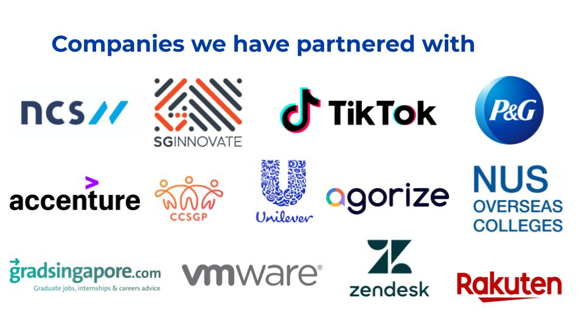
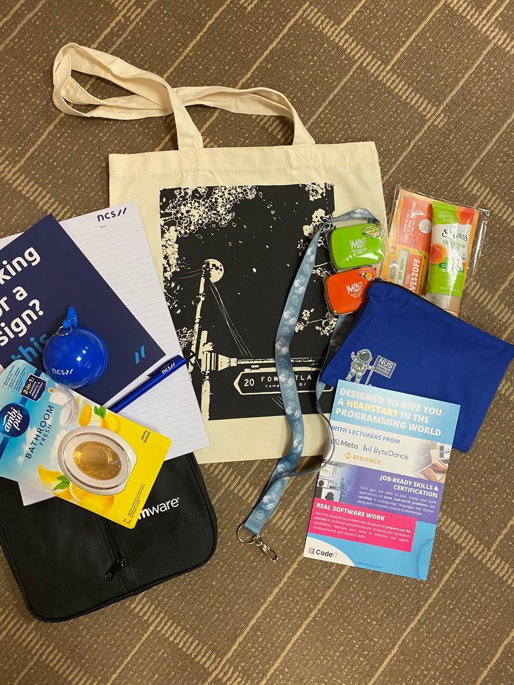
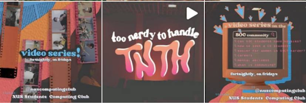
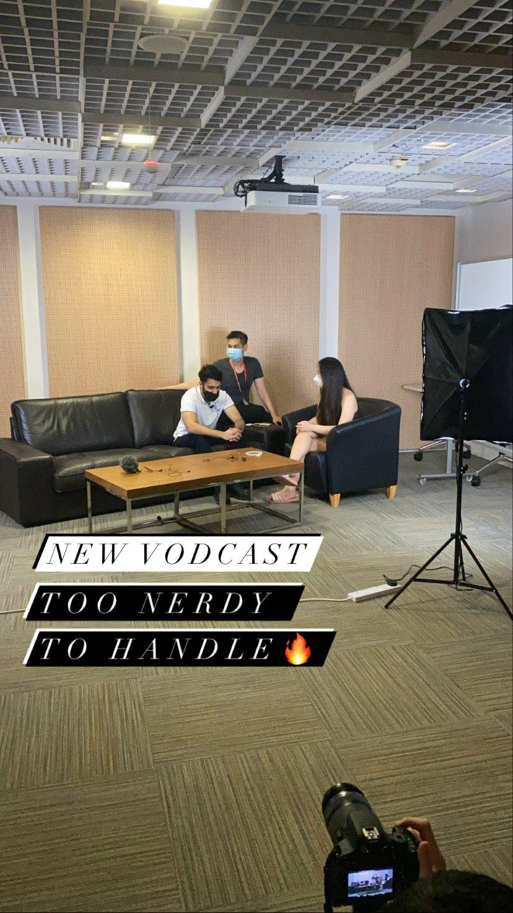
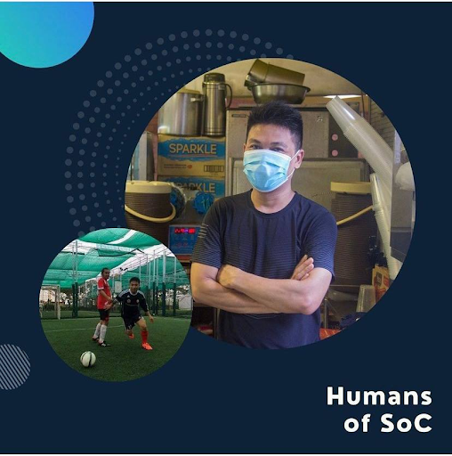
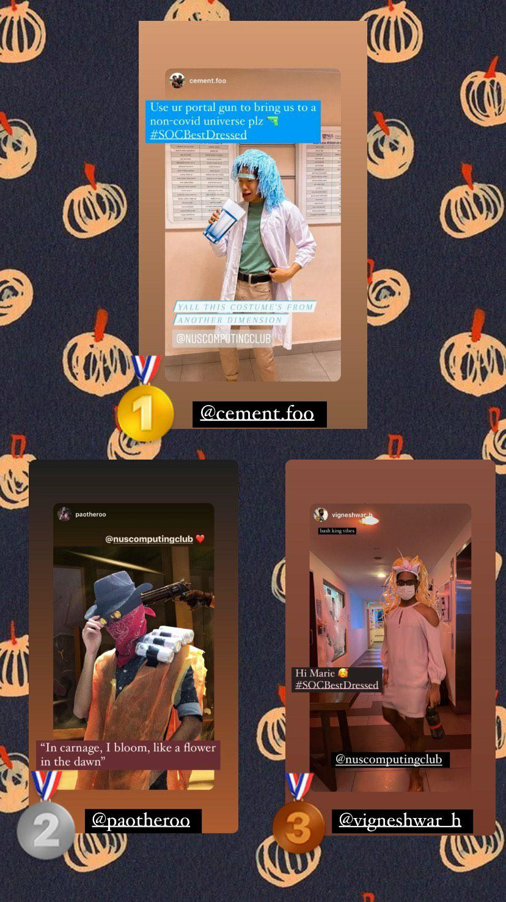

External Relations
Vision: We envision a strong School of Computing identity that unifies students and deepens relations
with external organisations.
Mission: The External Relations wing is responsible for stewarding the NUS Computing brand, executing
faculty level marketing initiatives, developing strategic relationships with external organisations, and
overseeing all forms of traditional and social media.
What you can expect
Innovation: A platform to let your creativity go wild with new initiatives or artwork that
embodies the School of Computing identity.
Connections: An opportunity to meet and forge partnerships with esteemed individuals from various
companies and organisations.
Holistic Development:: Take a break from coding and hone some of your soft skills in communication,
design, sales & marketing, leadership, and much more!
FRIENDS: Computing Club is a great place to form life long bonds and memories with people from
various backgrounds!
Introduction
Sponsorships - We act as the point of contact between the club and external organisations. Whether it be sourcing for sponsors for our events, or forging partnerships and collaborations with external organisations, we will be the ones who will strengthen and maintain our relationships with these organisations.
Merchandise - We create and handle the sale of computing merchandise (including the very popular major shirts). From shirts to lanyards to laptop sleeves, if there is any form of merchandise you wish to see, join us to turn your ideas into reality!
Roles
Sponsorships - Liaising with external organisations allowed us to hone our communication and negotiation
skills, something we do not normally get the chance to do as computing students, and network with all
sorts of different companies.
Merchandise - As part of the marketing cell, it was fun to brainstorm and see what kind of wacky ideas
and designs we could come up with. Being in this cell really got our creative juices flowing and was a
breath of fresh air from all the coding.
Events
As a cell that serves a supporting role to the club and its events, the marketing cell does not have its own events, other than the occasional physical merchandise sales.
Introduction
Graphic & Content - We are in charge of the club's social media accounts and help to publicise all events with eye-catching publicity contents and materials. We get the chance to create our own social media initiatives and we aim to increase students' engagement with the club.

Photography & Videography - We capture all the memorable moments in SoC through cameras. We aim to showcase the vibrant SoC dynamic through innovative photos and captivating videos. Check out our pictures here!
Roles
Graphic & Content - Being the creative arm of the club, we have a myriad of opportunities to explore our
artistic side and experiment with various designs that represent our club and its events. Tools such as
Photoshop and Canva are our best friends, and we get the opportunity to hone our designing, branding,
and communication skills! Working remotely helps with our time management, but we also hold
brainstorming sessions to help get the creative juices flow.
Photography & Videography - As members of the photography and videography cell, we are on the
ground, capturing moments and memories and interacting with participants. We also have the
opportunity to experiment, creating TNTH, our own podcast and initiating Humans of SoC to showcase
individuals around our campus.
Events
As a cell that serves both supporting and creative roles, we collaborate with all cells in the club closely to help them with their events' publicity materials. Also, we initiate our own events such as social media challenges and video series.
Too Nerdy To Handle (Video Series)
 Human of SOC (Social Media Initiative)
Halloween Challenge (Social Media Challenge)
